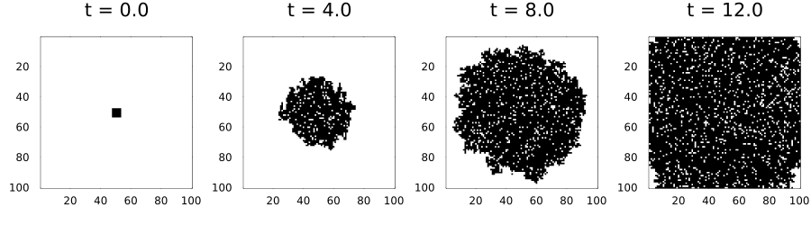
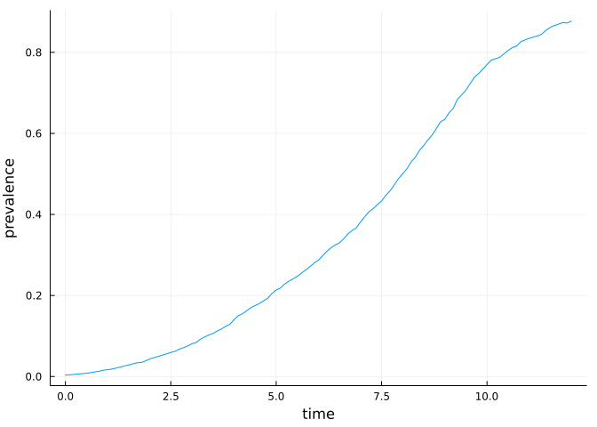
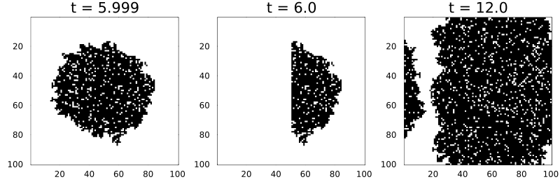
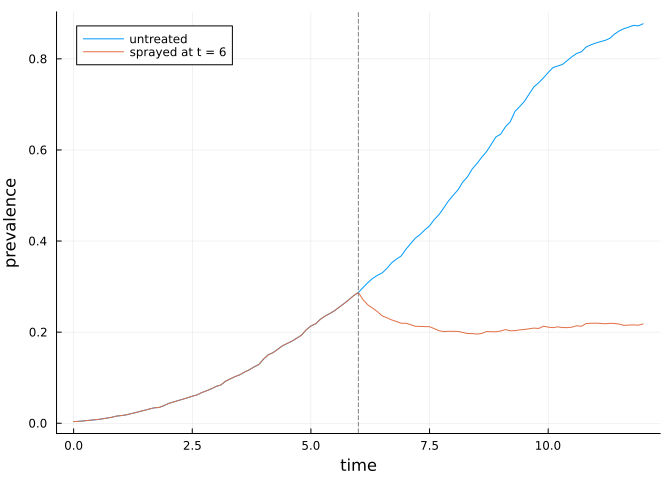
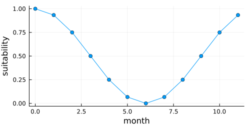
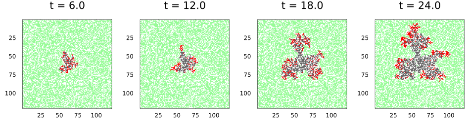
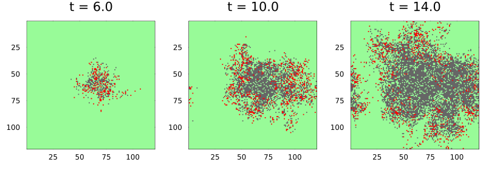
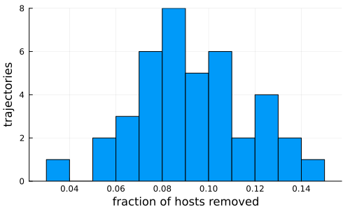
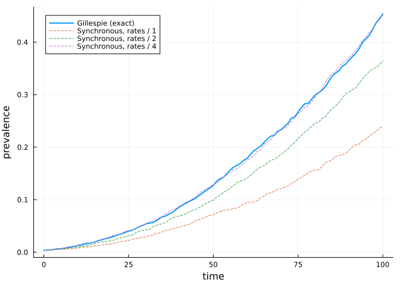

Event-driven dynamics
Simon Frost
- Overview
- Rules as rates
- One event at a time
- Summaries over time
- Three methods
- Interventions at exact times
- A sparse, seasonal landscape
- Dispersal through a kernel
- Large, mostly empty landscapes
- Ensembles
- The same rule in discrete time
Overview
Many plant-disease and pest models are written as rates, not as per-step probabilities: a susceptible plant becomes infected at rate β times its number of infected neighbours, and an infected plant is removed at rate γ. Such a model is a continuous-time Markov chain on the lattice. This vignette shows how to write one as an EventRule, simulate it exactly, event by event, with the Gillespie scheme, act on it at exact times, and run the same rule in discrete time.
ENV["GKSwstype"] = "100"
using CellularAutomataCore
using Plots
using Random
using StatisticsRules as rates
An EventRule’s function returns the cell’s possible transitions as rate => new_state pairs. Here is the contact process (an SIS epidemic): susceptible cells (0) are infected by each infected neighbour at rate β, and infected cells (1) recover at rate γ.
sis = EventRule(VonNeumann(1)) do cell, nbrs, ctx
if cell == 0
(ctx.p.β * count(==(1), nbrs) => 1,)
else
(ctx.p.γ => 0,)
end
endEventRule(<anonymous function>, VonNeumann(1))A problem with an event rule takes real times. Gillespie() simulates it exactly, and saveat takes real saving times.
n = 100
u0 = zeros(Int8, n, n)
u0[48:53, 48:53] .= 1
prob = CAProblem(sis, u0, 12.0, (β=2.5, γ=1.0); seed=1)
sol = solve(prob, Gillespie(); saveat=4.0)
sol.t4-element Vector{Float64}:
0.0
4.0
8.0
12.0plot([plot(sol; snapshot=i, c=:binary, colorbar=false, title="t = $(sol.t[i])")
for i in eachindex(sol.t)]...; layout=(1, 4), size=(900, 250))
The contact process on the square lattice persists only when β/γ exceeds about 1.65. At 2.5 the infection spreads outwards as a ragged front, and recoveries leave holes behind it that are soon reinfected.
One event at a time
A step of a continuous-time integrator is one event: the time jumps to the next event and exactly one cell changes.
integ = init(prob, Gillespie())
before = copy(integ.u)
step!(integ)
integ.t, findall(integ.u .!= before)(0.006665324843065025, CartesianIndex{2}[CartesianIndex(54, 51)])Summaries over time
Saving whole lattices is expensive. A SavingCallback records a summary at real times instead; here the prevalence every 0.1 time units.
prevalence = SavedValues(Float64, Float64)
solve(prob, Gillespie(); callback=SavingCallback((u, t, integ) -> mean(u), prevalence;
saveat=0.1))
plot(prevalence.t, prevalence.saveval; xlabel="time", ylabel="prevalence", legend=false)
Three methods
Gillespie(:next_reaction), the default, gives every cell its own exponential clock in a heap. After an event it recomputes only the cell and its neighbours, so an event costs the same however large the lattice is. Gillespie(:direct) sums every rate at every event; it is simple and serves as a reference. Gillespie(:composition_rejection) (Slepoy et al. 2008) is the direct method made fast: cells are grouped by the binary order of magnitude of their rates, an event picks a group by its total rate and then a cell in it by rejection, so it too costs the same however large the lattice is. The three sample the same process but use their random numbers differently, so they agree in distribution, not path by path.
function final_prevalences(method; reps=40)
[mean(final_state(solve(remake(prob; tspan=3.0, seed=s), Gillespie(method))))
for s in 1:reps]
end
[(; method, mean=mean(v), sd=std(v))
for (method, v) in ((m, final_prevalences(m))
for m in (:next_reaction, :direct, :composition_rejection))]3-element Vector{@NamedTuple{method::Symbol, mean::Float64, sd::Float64}}:
(method = :next_reaction, mean = 0.0823575, sd = 0.008374898009329229)
(method = :direct, mean = 0.08184750000000002, sd = 0.00795738610284455)
(method = :composition_rejection, mean = 0.08067499999999998, sd = 0.00755885454624456)small = remake(prob; tspan=3.0)
times = map((:next_reaction, :direct, :composition_rejection)) do m
solve(small, Gillespie(m))
return m => @elapsed solve(small, Gillespie(m))
end(:next_reaction => 0.002112667, :direct => 0.038457667, :composition_rejection => 0.001979584)The random numbers are counter-based, as everywhere in the package: a cell’s n-th waiting time is a function of the seed, the cell and n alone. A run is reproducible and does not depend on the order in which events are processed.
Interventions at exact times
Callbacks work as in discrete time. PresetTimeCallback and PeriodicCallback also make the simulation stop at exactly their times, even when no event falls there. Here every infected cell in the left half of the lattice is cleared (roguing) at t = 6.
rogue! = integ -> (integ.u[:, 1:(n ÷ 2)] .= 0)
s = solve(prob, Gillespie(); saveat=[5.999, 6.0, 12.0],
callback=PresetTimeCallback([6.0], rogue!))
plot([plot(s; snapshot=i, c=:binary, colorbar=false, title="t = $(s.t[i])")
for i in 2:4]...; layout=(1, 3), size=(800, 260))
Changing the parameters from a callback (integ.p = ...) changes every rate from that moment on. Here transmission falls to a quarter at t = 6, as if a protectant were sprayed. The prevalence drops at once and then holds roughly steady. β/γ = 0.625 is below the lattice threshold, so the infection will die out, but slowly: each cell still has four neighbours to infect, and dense infected patches persist for a long time before fluctuations clear them.
spray = PresetTimeCallback([6.0], integ -> (integ.p = (β=integ.p.β / 4, γ=integ.p.γ)))
sprayed = SavedValues(Float64, Float64)
solve(prob, Gillespie();
callback=CallbackSet(spray, SavingCallback((u, t, i) -> mean(u), sprayed; saveat=0.1)))
plot(prevalence.t, prevalence.saveval; label="untreated", xlabel="time",
ylabel="prevalence")
plot!(sprayed.t, sprayed.saveval; label="sprayed at t = 6")
vline!([6.0]; label=nothing, ls=:dash, c=:grey)
A sparse, seasonal landscape
Real host landscapes are patchy and the weather is seasonal. This model is an SIR epidemic among plants that occupy 60% of the cells, written with @camodel and an @events block. Cells without a host are masked, so they never change. Infection is driven by a seasonal suitability covariate with one slice per unit of time. In continuous time the rule sees ctx.t, the integer part of the time, and the rates are recomputed at every whole time.
sir = @camodel PlantSIR begin
@description "Plant SIR epidemic with seasonal transmission"
@states state::Int8 = 0 ∈ (0, 1, 2, 3) # 0 no host, 1 S, 2 I, 3 R
@parameters β = 1.2 γ = 0.25
@neighbourhood Moore(1)
@covariates season
@events begin
if cell == 1
(β * covariate(ctx, :season) * count(==(2), nbrs) => Int8(2),)
elseif cell == 2
(γ => Int8(3),)
else
()
end
end
endCAModel PlantSIR
Plant SIR epidemic with seasonal transmission
states:
state::Int8 = 0 ∈ (0, 1, 2, 3)
parameters:
β = 1.2
γ = 0.25
covariates: season
rule: EventRule(<anonymous function>, Moore(1))m = 120
hosts = rand(Xoshiro(3), m, m) .< 0.6
start = Int8.(hosts) # every host susceptible ...
for I in CartesianIndices((58:62, 58:62))
hosts[I] && (start[I] = 2) # ... except a small infected patch
end
season = cat([fill(0.5 + 0.5 * cospi(2t / 12), m, m) for t in 0:11]...; dims=3)
plot(0:11, season[1, 1, :]; xlabel="month", ylabel="suitability", legend=false,
size=(500, 250), marker=:circle)
p = CAProblem(sir, (state=start,), 24.0; space=Torus(m, m), mask=hosts,
covariates=(season=season,), seed=4)
ssol = solve(p, Gillespie(); saveat=6.0)
plot([plot(Torus(m, m), u; c=[:white, :palegreen, :red, :grey40], clims=(0, 3),
colorbar=false, title="t = $t") for (t, u) in zip(ssol.t[2:end], ssol.u[2:end])]...;
layout=(1, 4), size=(950, 260))
Dispersal through a kernel
Spores and insects travel farther than the next cell. A rule reads such long-range pressure from a KernelField, a weighted sum of a cell-level quantity over a dispersal kernel. In continuous time the field is kept up to date event by event: when a cell changes, every cell that reads it within the kernel gains its weighted change, and their rates are recomputed. An event then costs time in proportion to the kernel’s size, not the lattice’s.
spores = EventRule() do c, nbrs, ctx
c == 0 ? (ctx.p.β * field(ctx, :pressure) => 1,) : c == 1 ? (ctx.p.γ => 2,) : ()
end
pressure = KernelField(ExponentialKernel(2.0), c -> Float64(c == 1); include_centre=false)
v0 = zeros(Int8, 120, 120)
v0[60, 60] = 1
kp = CAProblem(spores, v0, 14.0, (β=2.0, γ=1.0); space=Torus(120, 120), seed=2,
fields=(; pressure))
ksol = solve(kp, Gillespie(); saveat=[6.0, 10.0, 14.0])
plot([plot(Torus(120, 120), u; c=[:palegreen, :red, :grey40], clims=(0, 2),
colorbar=false, title="t = $t") for (t, u) in zip(ksol.t[2:end], ksol.u[2:end])]...;
layout=(1, 3), size=(800, 280))
With exponential dispersal of mean distance two cells, the epidemic grows as a ragged front with satellite foci ahead of it, which a nearest-neighbour rule cannot produce.
Large, mostly empty landscapes
An invasion that starts from a few cells touches little of a large lattice for a long time. SparseBackend keeps only the parts of the lattice that differ from a background state; with Gillespie it gives clocks only to the cells that differ and to the cells near them, which are the only ones that can have a positive rate (the rule must give a background cell among background neighbours rate zero). The run equals the ArrayBackend run event for event, at a fraction of the memory:
big = zeros(Int8, 2000, 2000)
big[1000:1002, 1000:1002] .= 1
bp = CAProblem(sis, big, 8.0, (β=0.6, γ=1.0); space=Torus(2000, 2000), seed=1)
sparse = solve(bp, Gillespie(); backend=SparseBackend(Int8(0)), save_everystep=false)
dense = solve(bp, Gillespie(); save_everystep=false)
memory(b) = Base.summarysize(init(bp, Gillespie(); backend=b, save_everystep=false).state)
(same=final_state(sparse) == final_state(dense), infected=sum(final_state(sparse)),
sparse_MB=memory(SparseBackend(Int8(0))) / 1e6, dense_MB=memory(ArrayBackend()) / 1e6)(same = true, infected = 59, sparse_MB = 0.066304, dense_MB = 484.000648)Ensembles
An EnsembleProblem gives every trajectory its own seed, as in discrete time. Here is the distribution of the final epidemic size in the seasonal landscape.
ens = solve(EnsembleProblem(p; output_func=(s, ctx) -> (count(==(3), final_state(s)), false)),
Gillespie(), EnsembleThreads(); trajectories=40, save_everystep=false)
histogram(ens.u ./ count(hosts); bins=15, xlabel="fraction of hosts removed",
ylabel="trajectories", legend=false, size=(500, 300))
The same rule in discrete time
An event rule also runs under the synchronous schemes. In each step a cell with total rate a changes with probability 1 - exp(-a), and if it changes, it picks a transition in proportion to the rates. This is the usual chain-binomial discretisation, and it runs on every backend, GPUs included. It is an approximation: a cell infected during a step cannot pass the infection on until the next one, so the discrete-time epidemic lags the exact one. The lag shrinks as the step shrinks relative to the rates. Below, the rates are divided by k and the run lengthened k times, which leaves the exact process unchanged up to a rescaling of time but makes each step a smaller slice of it.
function prevalence_curve(k; exact)
q = remake(prob; p=(β=0.2 / k, γ=0.1 / k), tspan=exact ? 100.0k : 100k)
saved = SavedValues(exact ? Float64 : Int, Float64)
cb = SavingCallback((u, t, i) -> mean(u), saved; saveat=k)
exact ? solve(q, Gillespie(); callback=cb) : solve(q; callback=cb, save_everystep=false)
return saved.t ./ k, saved.saveval
end
plot(prevalence_curve(1; exact=true)...; label="Gillespie (exact)", lw=2,
xlabel="time", ylabel="prevalence", legend=:topleft)
for k in (1, 2, 4)
plot!(prevalence_curve(k; exact=false)...; label="Synchronous, rates / $k", ls=:dash)
end
plot!()
Slepoy, Alexander, Aidan P. Thompson, and Steven J. Plimpton. 2008. “A Constant-Time Kinetic Monte Carlo Algorithm for Simulation of Large Biochemical Reaction Networks.” The Journal of Chemical Physics 128 (20): 205101. https://doi.org/10.1063/1.2919546.